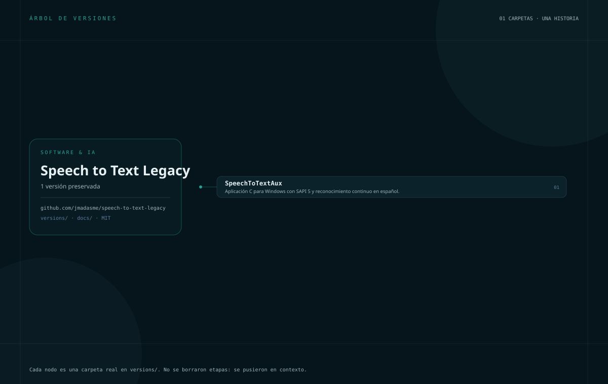

SpeechToTextAux
12 archivosAplicación C para Windows con SAPI 5 y reconocimiento continuo en español.
Ver carpetaReconocimiento de voz en español en tiempo real con C y SAPI 5, directo desde la entrada de audio.

Herramienta de escritorio para Windows que toma audio de la línea de entrada y lo transcribe en vivo usando SAPI 5. Es la versión legacy del trabajo de voz, anterior a los modelos modernos.
Transcribir una conversación en un equipo Windows antiguo no siempre permite instalar un modelo grande ni enviar audio a un servicio externo.
Usar el motor de voz que ya trae Windows, con una interfaz mínima y configuración explícita del dispositivo de entrada.
Un auxiliar de dictado para Windows 10 que usa el motor de voz del sistema desde C, con COM multihilo y una ventana invisible que recibe los eventos.
Un auxiliar de dictado para Windows 10 que usa el motor de voz del sistema desde C, con COM multihilo y una ventana invisible que recibe los eventos.
Los fragmentos son del código real. El programa es Windows-only y requiere el paquete de voz en español instalado.
Cada carpeta conserva una etapa del proyecto. No se borraron las anteriores: se pusieron en contexto.
Aplicación C para Windows con SAPI 5 y reconocimiento continuo en español.
Ver carpetaSpeech to Text Legacy es una aplicación de consola para Windows 10 escrita en C que transcribe voz en español con SAPI 5. Captura el dispositivo de entrada predeterminado —line-in, micrófono o USB— y muestra cada frase reconocida con marca de tiempo, sin enviar audio a la nube.
Está orientada a equipos Windows antiguos o con recursos limitados donde no conviene instalar un modelo grande ni depender de un servicio externo. Sirve para dictado, transcripción de radio o accesibilidad, y se conserva como antecedente de las familias de voz actuales. Su límite principal es la precisión de SAPI y la dependencia del paquete de idioma.
El README original de la versión de referencia, completo.
Reconocimiento de voz en español en tiempo real desde la entrada auxiliar (line-in) de Windows 10, utilizando la API nativa SAPI (Speech API) de Microsoft.
SpeechToTextAux es un programa en C para Windows 10 que captura audio continuamente desde el dispositivo de entrada predeterminado del sistema (line-in, microfono o cualquier entrada de audio) y realiza reconocimiento de voz a texto en espanol mediante la API de reconocimiento de voz de Windows (SAPI 5). El texto reconocido se muestra en la consola en tiempo real con marcas de tiempo.
El programa esta disenado para funcionar con entrada auxiliar (line-in o aux-in), tipicamente utilizada para conectar fuentes de audio externas como micrófonos de solapa, mezcladores, radios, televisores, sistemas de megafonia o cualquier dispositivo con salida de audio analogica de 3.5 mm.
SAPI (Speech Application Programming Interface) es una API de Microsoft incluida de forma nativa en Windows desde Windows 2000/XP. En Windows 10, SAPI 5.4+ esta preinstalado y listo para usar. Proporciona dos funcionalidades principales:
SpeechToTextAux utiliza unicamente la funcionalidad de reconocimiento.
Captura de audio: SAPI accede al dispositivo de entrada predeterminado del sistema a traves de Windows Audio Session API (WASAPI) o el controlador de audio heredado, capturando el flujo de audio en tiempo real.
Motor de reconocimiento: El motor de SAPI (SpRecognizer) procesa el audio utilizando modelos acusticos y de lenguaje. Para espanol, se necesita el paquete de voz correspondiente, que contiene los modelos foneticos y el diccionario del idioma.
Gramatica de dictado: SAPI utiliza una "gramatica de dictado" (dictation grammar) que permite el reconocimiento de voz continua y libre, sin restricciones de comandos fijos. Esto es distinto a una gramatica basada en reglas (como las usadas para comandos de voz).
Eventos asincronos: El reconocimiento es asincrono. Cuando SAPI detecta una frase completa, dispara un evento (SPEI_RECOGNITION) que se entrega al programa a traves de un mensaje de Windows (WM_RECO_EVENT) en el hilo principal.
Extraccion de texto: El programa recibe el evento, obtiene el texto reconocido mediante ISpRecoResult::GetText() y lo muestra en la consola.
[Fuente de audio externa] -> [Cable 3.5 mm] -> [Entrada line-in (azul)]
|
v
[Controlador de audio]
|
v
[Dispositivo predeterminado]
|
v
[SAPI 5 - SpRecognizer]
|
v
[Evento SPEI_RECOGNITION]
|
v
[WM_RECO_EVENT]
|
v
[Console - texto en pantalla]
Windows 10 no incluye el paquete de reconocimiento de voz en espanol por defecto. Debe instalarse manualmente:
Metodo 1: Configuracion de Windows (recomendado)
Metodo 2: Instalacion directa
Si prefiere usar PowerShell como administrador:
# Instalar el paquete de reconocimiento de voz en espanol (Espana)
Add-WindowsCapability -Online -Name "Language.Speech.Spanish~~~es-ES~0.0.1.0"
Para espanol (Mexico):
Add-WindowsCapability -Online -Name "Language.Speech.Spanish~~~es-MX~0.0.1.0"
Verificacion:
Para capturar audio desde la entrada auxiliar (line-in), debe configurarla como dispositivo de entrada predeterminado:
Nota: Si su placa de sonido no tiene una entrada line-in fisica, puede usar un adaptador USB a audio de 3.5 mm o un microfono USB. En ese caso, el dispositivo aparecera con el nombre del fabricante y debera seleccionarlo como predeterminado de la misma forma.
Nota sobre "Stereo Mix" o "What U Hear": Algunas placas de sonido ofrecen una entrada llamada "Stereo Mix" o "What U Hear" que captura todo lo que se reproduce por los altavoces. Si desea transcribir audio desde una aplicacion (como un reproductor de video), esta opcion puede ser util. Seleccionela como dispositivo predeterminado.
MinGW-w64 es un toolchain libre y ligero que permite compilar el programa sin necesidad de Visual Studio.
Instalacion de MinGW-w64:
pacman -S mingw-w64-x86_64-gccgcc --versionCompilacion:
make TOOLCHAIN=MINGW
O manualmente:
gcc -o SpeechToTextAux.exe src/main.c src/recognizer.c src/console_utils.c ^
-lole32 -lsapi -lwinmm -mconsole -O2 -Wall -Wextra -Wpedantic -std=c99
Requisito: Visual Studio 2019 o 2022 con la carga de trabajo "Desarrollo para el escritorio con C++".
Compilacion:
Abra un Developer Command Prompt for VS 2022 y ejecute:
nmake /f Makefile TOOLCHAIN=MSVC
O manualmente:
cl /nologo /Fe:SpeechToTextAux.exe /I. /utf-8 /O2 /W4 ^
src\main.c src\recognizer.c src\console_utils.c ^
/link ole32.lib sapi.lib /SUBSYSTEM:CONSOLE
| Objetivo | Descripcion |
|---|---|
all |
Compilar el programa (predeterminado) |
clean |
Eliminar archivos objeto y ejecutable |
rebuild |
Limpiar y recompilar todo |
help |
Mostrar ayuda del Makefile |
mingw-w64-x86_64-sdk o en los headers incluidos con MinGWEl programa se ejecuta desde la linea de comandos sin argumentos:
SpeechToTextAux.exe
Inicio: - La ventana de la consola cambia su titulo a "SpeechToTextAux - Reconocimiento de Voz en Espanol" - Se inicializa COM en modo multi-hilo - Se crea una ventana oculta (sin bordes, sin aparecer en la barra de tareas) para recibir eventos de SAPI - Se configura el motor de reconocimiento SAPI con el idioma espanol - Se establece la entrada de audio predeterminada - Se inicia el reconocimiento
Operacion normal: - El programa entra en un bucle de mensajes de Windows (GetMessage/DispatchMessage) - Cuando SAPI reconoce una frase, envia un mensaje WM_RECO_EVENT a la ventana oculta - El programa procesa el evento, extrae el texto y lo imprime en la consola - El programa no consume CPU mientras no hay reconocimiento (el bucle se bloquea en GetMessage)
Finalizacion: - Ctrl+C dispara el manejador de senales que envia WM_CLOSE a la ventana oculta - La ventana procedimiento inicia la secuencia de cierre: detiene el reconocimiento, libera los objetos COM de SAPI, destruye la ventana y finaliza COM - Se muestra un mensaje de "Programa terminado correctamente"
| Codigo | Significado |
|---|---|
| 0 | Terminacion normal |
| 0xE001 | No se encontro dispositivo de entrada de audio |
| 0xE002 | Idioma espanol no disponible (codigo no usado actualmente) |
| 0xE003 | Error al inicializar el motor de reconocimiento SAPI |
| 0xE004 | Error al inicializar COM |
Escenario: Tiene un microfono de solapa conectado a la entrada auxiliar y quiere transcribir una entrevista.
C:\> SpeechToTextAux.exe
[10:15:03] Iniciando reconocimiento de voz en espanol...
[10:15:03] Reconocimiento activo. Habla por el dispositivo de entrada (line-in/microfono).
[10:15:03] Presiona Ctrl+C para salir.
[10:15:12] Bienvenidos a esta entrevista sobre inteligencia artificial
[10:15:18] La pregunta del dia es como afectara la automatizacion al empleo
[10:15:28] Creemos que la inteligencia artificial creara nuevas oportunidades
[10:15:35] Pero tambien es cierto que algunos trabajos desapareceran
[10:15:42] Sin embargo la historia demuestra que la tecnologia siempre ha generado mas empleo
[10:16:05] Esa es una perspectiva muy interesante muchas gracias por compartirla
^C
[10:16:08] Deteniendo reconocimiento...
[10:16:08] Liberando recursos SAPI...
[10:16:08] Programa terminado correctamente.
Escenario: Conecta la salida de audio de un televisor al line-in para transcribir noticias.
C:\> SpeechToTextAux.exe
[11:30:00] Iniciando reconocimiento de voz en espanol...
[11:30:00] Reconocimiento activo...
[11:30:15] El presidente anuncio nuevas medidas economicas para el proximo trimestre
[11:30:22] El ministro de economia detallo los puntos principales de la reforma fiscal
[11:30:35] Los mercados internacionales han reaccionado de forma positiva al anuncio
[11:30:48] Los analistas consideran que estas medidas podrian impulsar el crecimiento
[11:31:02] En otros titulares la comunidad cientifica celebra el avance en la investigacion
^C
[11:31:05] Deteniendo reconocimiento...
[11:31:05] Liberando recursos SAPI...
[11:31:05] Programa terminado correctamente.
C:\> SpeechToTextAux.exe
[14:35:12] Iniciando reconocimiento de voz en espanol...
[14:35:12] ERROR: No se encontro dispositivo de entrada de audio. Conecte un microfono
o dispositivo a la entrada auxiliar (line-in) y verifique que este configurado
como dispositivo predeterminado en Windows.
HRESULT: 0x80045002 - The audio input device was not found.
C:\> SpeechToTextAux.exe
[14:35:12] Iniciando reconocimiento de voz en espanol...
[14:35:12] ADVERTENCIA: No se encontro reconocedor SAPI para espanol (0x0C0A).
Usando reconocedor predeterminado del sistema. Instale el paquete de voz
en espanol desde Configuracion > Hora e idioma > Voz.
[14:35:12] Reconocimiento activo...
INICIO
|
v
[SetConsoleTitleW] --> "SpeechToTextAux - Reconocimiento de Voz en Espanol"
|
v
[SetConsoleCtrlHandler] --> Registrar CtrlHandler (Ctrl+C)
|
v
[CoInitializeEx(NULL, COINIT_MULTITHREADED)]
| Inicializa COM para el hilo actual
|
v
[RegisterClassEx] --> Registrar clase de ventana "SpeechToTextAuxWindowClass"
|
v
[CreateWindowEx(WS_EX_TOOLWINDOW, ...)]
| Crea ventana oculta para recibir mensajes de SAPI
|
v
[Recognizer_init()]
| - CoCreateInstance(CLSID_SpRecognizer) --> Motor SAPI
| - CreateRecoContext() --> Contexto de reconocimiento
| - SetNotifyWindowMessage(hwnd, WM_RECO_EVENT) --> Notificaciones
| - SetInterest(SPEI_RECOGNITION) --> Evento de frase reconocida
| - CreateGrammar(0) --> Gramatica de dictado
|
v
[Recognizer_setAudioInput()]
| SetInput(NULL, TRUE) --> Dispositivo predeterminado
|
v
[Recognizer_setLanguage()]
| Busca reconocedor espanol (LCID 0x0C0A) en catalog SAPI
| Si no existe: fallback al predeterminado + advertencia
|
v
[Recognizer_start()]
| - LoadDictation(NULL, SPLO_STATIC) --> Cargar gramatica
| - SetDictationState(SPRS_ACTIVE) --> Activar escucha
|
v
[BUCLE DE MENSAJES (GetMessage/DispatchMessage)]
|
+---> [WM_RECO_EVENT] --> Recognizer_handleEvent()
| | GetEvents() --> Obtener eventos pendientes
| | Para cada evento SPEI_RECOGNITION:
| | - Obtener ISpRecoResult (lParam)
| | - GetText() --> Texto reconocido (WCHAR*)
| | - Console_printRecognized(texto)
| | - CoTaskMemFree(texto)
| | - Release(resultado)
| v
| [Vuelve al bucle]
|
+---> [WM_CLOSE (por Ctrl+C)] --> Console_printInfo("Deteniendo...")
| | --> DestroyWindow(hwnd)
| v
| [WM_DESTROY] --> PostQuitMessage(0)
| v
| [WM_QUIT] --> GetMessage() retorna 0 --> Salir del bucle
|
v
[Recognizer_stop()] --> SetDictationState(SPRS_INACTIVE)
|
v
[Recognizer_cleanup()] --> Release(recoGrammar, recoContext, recognizer)
|
v
[DestroyWindow(g_hwnd)] --> Solo si aun existe (g_hwnd != NULL)
|
v
[CoUninitialize()] --> Finalizar COM
|
v
[Console_printInfo("Programa terminado correctamente.")]
|
v
FIN (return 0)
SAPI Engine
|
| (hilo interno de SAPI)
|
v
[Evento SPEI_RECOGNITION detectado]
|
| SAPI postea WM_RECO_EVENT a la ventana oculta
| via PostMessage() (identificado por el HWND
| registrado en SetNotifyWindowMessage)
|
v
[Cola de mensajes del programa]
|
| GetMessage() lo recoje
|
v
[WndProc() recibe WM_RECO_EVENT]
|
| wParam/lParam no usados directamente
|
v
[Recognizer_handleEvent()]
|
| GetEvents() para obtener SPEVENT
| (un evento puede contener varios resultados)
|
v
[ISpRecoResult::GetText()] --> WCHAR* con el texto
|
v
[Console_printRecognized(WCHAR*)]
|
| Timestamp en cian + texto en blanco brillante
| Usa WriteConsoleW (consola) o fwprintf (pipe)
|
v
[CoTaskMemFree(pszText)] + [Release(pResult)]
SpeechToTextAux/
|-- PLAN.md - Plan de implementacion original
|-- AUDIT_REPORT.md - Reporte de auditoria de codigo
|-- Makefile - Script de compilacion (MSVC / MinGW)
|-- README.md - Esta documentacion
|-- src/
| |-- main.c - Punto de entrada, ventana oculta, bucle de mensajes
| |-- recognizer.h - Declaraciones del modulo de reconocimiento SAPI
| |-- recognizer.c - Implementacion del motor de reconocimiento SAPI
| |-- console_utils.h - Declaraciones de utilidades de consola
| |-- console_utils.c - Impresion con colores, timestamps, formato
| |-- resource.h - Constantes: WM_RECO_EVENT, codigos de error, LCIDs
|-- docs/
| |-- datasheet.md - Especificacion tecnica para el usuario final
| |-- desarrollador.md - Documentacion tecnica para desarrolladores
|-- build/ - Directorio de compilacion (generado)
| Problema | Causa probable | Solucion |
|---|---|---|
| "No se encontro dispositivo de entrada de audio" | No hay ningun dispositivo de entrada configurado como predeterminado | Conecte un microfono o line-in y configurelo en Sonido > Grabacion > Establecer como predeterminado |
| Error 0x80045002 (SPERR_NO_AUDIO_INPUT) | El dispositivo de entrada no esta disponible o esta deshabilitado | Verifique que el dispositivo este habilitado en Administrador de dispositivos > Entradas y salidas de audio |
| "Error al inicializar el motor de reconocimiento SAPI" | SAPI no esta disponible en el sistema | Windows 10 incluye SAPI; si falta, ejecute sfc /scannow o reinstale el SDK de Windows |
| "ADVERTENCIA: No se encontro reconocedor SAPI para espanol" | Paquete de voz en espanol no instalado | Instale el paquete desde Configuracion > Hora e idioma > Idioma > Espanol > Opciones > Voz > Descargar |
| El programa inicia pero no reconoce voz | El microfono esta silenciado o el volumen de entrada es muy bajo | Verifique el nivel de entrada en Sonido > Grabacion > Propiedades > Niveles |
| El texto reconocido aparece con errores | Ruido de fondo, mala pronunciacion o volumen bajo | Acerque la fuente de audio, reduzca el ruido ambiente y verifique el nivel de grabacion |
| El reconocimiento es muy lento | El dispositivo de entrada tiene baja calidad de muestreo | Verifique que el formato predeterminado sea 16 bits, 44100 Hz (calidad de CD) en Propiedades del dispositivo > Formato predeterminado |
| "Error al inicializar COM" | COM no puede inicializarse (raro en Windows moderno) | Ejecute como administrador o verifique que la libreria ole32.dll este presente |
| La consola no muestra colores | La terminal no soporta ANSI o esta redirigida | El programa usa API de consola de Windows (SetConsoleTextAttribute), no secuencias ANSI. Use CMD, PowerShell o Windows Terminal |
| El programa no compila con MinGW: "sapi.h: No such file or directory" | Faltan los headers de SAPI en MinGW | Instale mingw-w64-x86_64-sdk o copie sapi.h desde el SDK de Windows (incluido en mingw-w64 desde 2019+) |
"undefined reference to IID_ISpRecognizer'" | Libreria sapi no enlazada correctamente | Agregue-lsapi` a las flags de enlace |
El reconocimiento no es perfecto: SAPI es un motor de reconocimiento general. La precision depende de la calidad del audio, la claridad del habla y la ausencia de ruido de fondo.
Latencia: El reconocimiento tipicamente tiene una latencia de 0.5 a 2 segundos desde que se completa una frase hasta que aparece en pantalla.
Line-in vs Microfono: La entrada auxiliar (line-in) espera una senal de nivel de linea (mayor voltaje que un microfono). Si conecta un microfono directamente a una entrada line-in, el audio puede ser muy bajo. Use un microfono con preamplificador o conectelo a la entrada de microfono (rosa).
No requiere conexion a Internet: Todo el procesamiento es local (SAPI es nativo de Windows). No se envian datos a la nube.
Compatibilidad: El programa compila tanto en 32 como en 64 bits. La version de MinGW-w64 debe coincidir con la arquitectura del sistema.
Las placas de sonido de PC utilizan el codigo de colores para los conectores de 3.5 mm:
_____ _____ _____
/ \/ \/ \
| ROSA | VERDE| AZUL |
| MIC | AUDIO| LINE |
| | SAL | ENT |
|______|______|______|
Codigo de colores estandar (PC99):
- ROSA: Microfono (entrada de microfono, nivel de microfono)
- VERDE: Salida de audio (auriculares/altavoces)
- AZUL: Line-in / Aux-in (entrada auxiliar, nivel de linea)
[Fuente de audio externa]
|
| Cable de 3.5 mm (estandar)
| - Punta: Canal izquierdo
| - Anillo: Canal derecho
| - Base: Tierra (GND)
|
v
[Placa de sonido - Conector AZUL (Line-In)]
|
| Controlador de audio (Realtek / Intel / etc.)
| Configurado como dispositivo predeterminado en Windows
|
v
[SAPI 5 - SpRecognizer]
|
v
[Texto en consola]
Si su PC no tiene entrada line-in (comun en laptops modernas o dispositivos con un solo conector combinado), use un adaptador USB:
[Fuente de audio] -- [Adaptador USB a audio 3.5 mm] -- [Puerto USB del PC]
Conector TRS de 3.5 mm (estandar stereo):
Seccion transversal:
Punta (Tip) ---> Canal izquierdo (Left)
Anillo (Ring) ---> Canal derecho (Right)
Base (Sleeve) ---> Tierra (Ground)
Vista lateral:
====||========
|TIP|| RING |
| L || R |
|____||______|
|
SLEEVE (GND)
Para fuentes mono (un solo canal):
- Use solo la punta y la base
- El anillo se deja sin conectar
- O use un adaptador Y de mono a stereo
Las primeras versiones existen para que estos errores no se repitan: cada una dejó una decisión de diseño verificable.
Windows 10 no trae el reconocedor en español instalado por defecto. El programa busca el LCID 0x0C0A y, si no lo encuentra, usa el reconocedor predeterminado y emite una advertencia; el código de error ERR_RECO_NO_LANGUAGE quedó definido pero sin uso. Se documentó la instalación manual del paquete.
Recognizer_setAudioInput() llama a SetInput(NULL, TRUE), así que siempre toma el dispositivo predeterminado y no permite elegir otro desde la aplicación. Además, el line-in espera nivel de línea: un micrófono conectado directo puede sonar demasiado bajo. El README recomienda preamplificador o entrada de micrófono.
El proyecto requiere Windows SDK o MinGW-w64 con sapi.h, y enlaza ole32, sapi y winmm. No hay compilación cruzada sencilla ni versión Linux, porque SAPI es una API de Windows. El README enumera los errores típicos de encabezados y símbolos faltantes.
Seis criterios con la misma escala en todo el catálogo, para comparar sin marketing.
No. SAPI 5 es exclusivo de Windows.
No. El reconocimiento es local.
La de SAPI 5 en español: suficiente para dictado claro, no para audio ruidoso.
Sí, seleccionando el dispositivo de entrada del sistema.
Sí, la familia de asistentes locales usa modelos actuales; esta se conserva como antecedente.
Usá esta familia como base para speech to text legacy. Está documentada para que puedas entenderla, ejecutarla y continuarla sin adivinar.